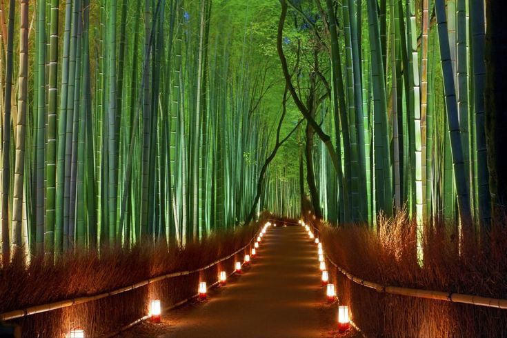
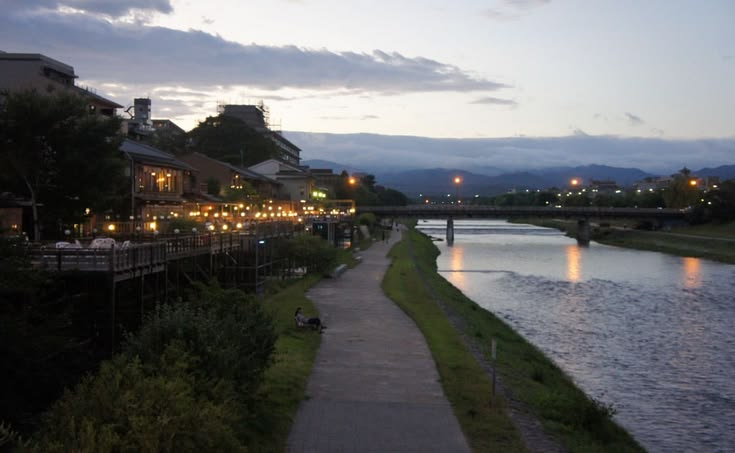
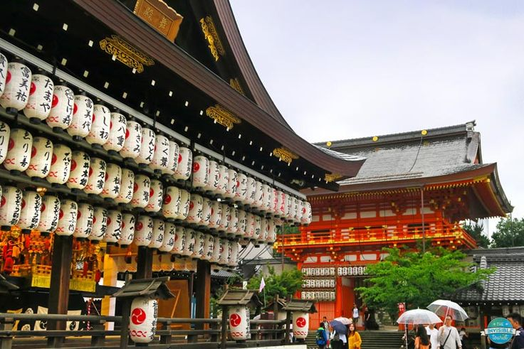

Planeje sua viagem para Kyoto
Viajar para o Japão é uma experiência incrível! Confira algumas dicas importantes para aproveitar sua estadia em Kyoto com tranquilidade.

Melhor época para viajar
A primavera e o outono são ótimas épocas para visitar Kyoto. Na primavera, você poderá apreciar as flores de cerejeira, enquanto no outono as folhas das árvores ganham lindas tonalidades.

Respeite a cultura local
Ao visitar templos e santuários, mantenha o respeito, evite falar alto e siga as orientações dos locais. Lembre-se de que muitos desses espaços são considerados sagrados pelos japoneses.

Transporte em Kyoto
Kyoto possui ônibus, metrôs e trens que facilitam o deslocamento pela cidade. Planeje seus trajetos com antecedência para aproveitar melhor os passeios.

Documentos necessários
Verifique a validade do seu passaporte e consulte as exigências de entrada no Japão antes de viajar. Organize seus documentos com antecedência.

Experimente a culinária japonesa
Aproveite sua viagem para experimentar pratos tradicionais como sushi, ramen, tempurá e doces japoneses. Kyoto também é conhecida por sua culinária tradicional.

Organize seu roteiro
Pesquise os pontos turísticos que deseja conhecer e organize os passeios por região. Assim, você economiza tempo e consegue aproveitar melhor cada lugar.
Informações importantes
Alguns detalhes que você precisa saber antes de embarcar!
Pronto para conhecer Kyoto?
Agora que você já sabe tudo isso, comece a planejar sua viagem!
Fazer minha reserva